Good Day Oregon
(August 26, 1996 - present)
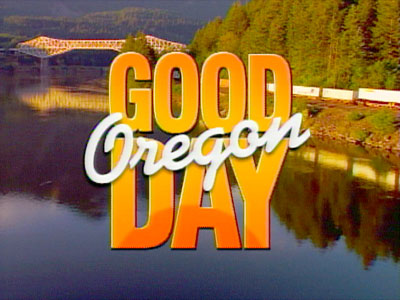
Opening titles from the show, 1996.
Oregon's first completely local
three-hour morning news program. Designed to compete with NBC's
"Today" and ABC's "Good Morning America," "Good Day
Oregon" soon established a loyal audience.
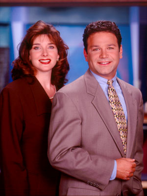
Original hosts of Good Day Oregon, Laura
Stephenson and Ken Ackerman.
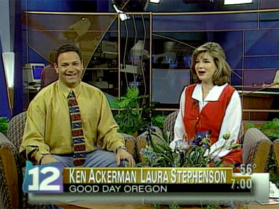
Ken Ackerman and Laura Stephenson open the show at 7am.
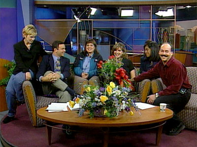
Left to right: Kimberly Maus, Ken Ackerman, Amy Freeze,
Laura Stephenson, Barbara Wood and Tony Martinez on
Laura Stephenson's last day as
co-host,
May
20,
1998.
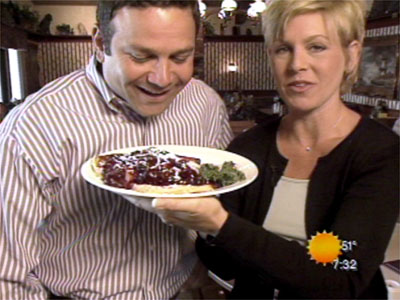
Ken
and
Kimberly
enjoy
the
tantalizing
cuisine
during
a
visit
to
Elmer's
Pancake
and
Steak
House.
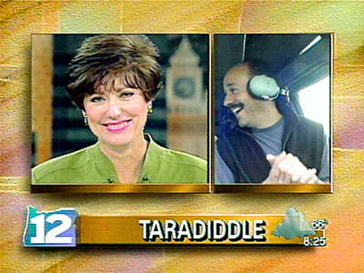
Kathy
Smith
and
Tony
Martinez
share
a
laugh
over
the
definition
of
the
"Word
of
the
Day."
(In
case
you're
wondering,
a
Taradiddle
is
a
petty
falsehood
or
a
fib.)
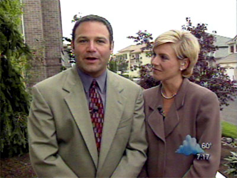
Ken
Ackerman
and
Kimberly
Maus
hosting
Good
Day
Oregon
from
the
"Street
of
Dreams."
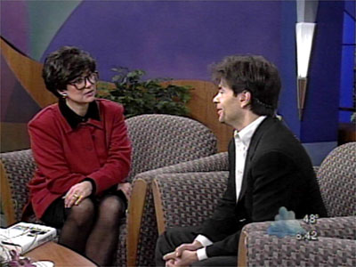
Kathy
Smith
waits
for
an
answer
from
guest
George
Stephanopolous.
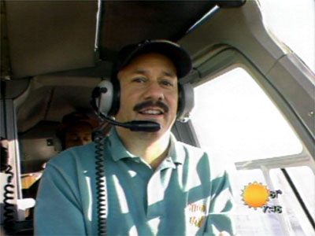
Tony
Martinez
reports
the
morning
traffic
from
high
above
Portland
in
KPTV's
helicopter,
"Air
12."
Hiding
behind
Tony
is
cameraman
Daryl
Mitchell.
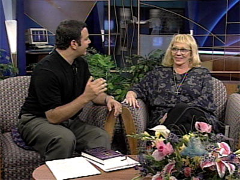
She
knows
what
Ken's
next
question
is
going
to
be:
Psychic
Sylvia
Browne
visits
with
Ken
Ackerman.
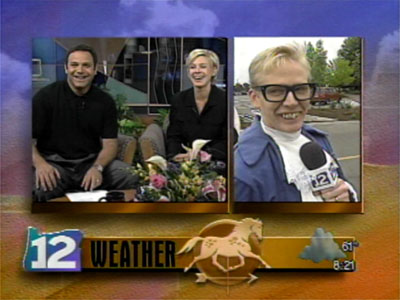
Andy
Carson
shows
off
his
Austin
Powers
look
for
Ken
and
Kim.
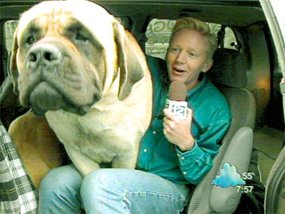
Andy
Carson
goes
to
the
dogs
for
a
"big
dog"
segment.
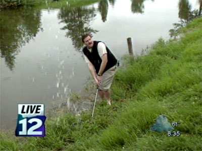
Funny-man-about-town
Phil
Cassidy
tries
to
club
his
way
out
of
a
water
hazard.
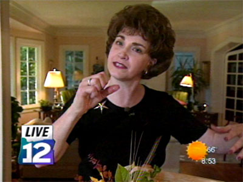
A
little
homemaking
advice
from
frequent
guest
Mary
Ann
Bauer.
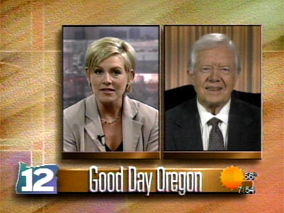
Kimberly
Maus
interviews
former
President
Jimmy
Carter
via
satellite.
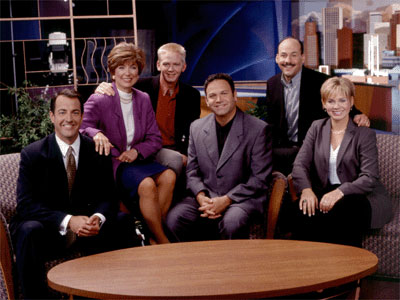
Good Day Oregon, 2000: Pete Ferryman (news anchor),
Kathy Smith (news anchor), Andy Carson (weather),
Ken Ackerman (host), Tony Martinez (traffic), Kimberly Maus (host).
| Good Day Oregon
BROADCAST HISTORY |
AUG 1996 - SEP 1999: MON-FRI 7:00AM-9:00AM
SEP 1999 - PRESENT: MON-FRI 5:00AM-9:00AM |


This
page
last
updated
on
August 17, 2025